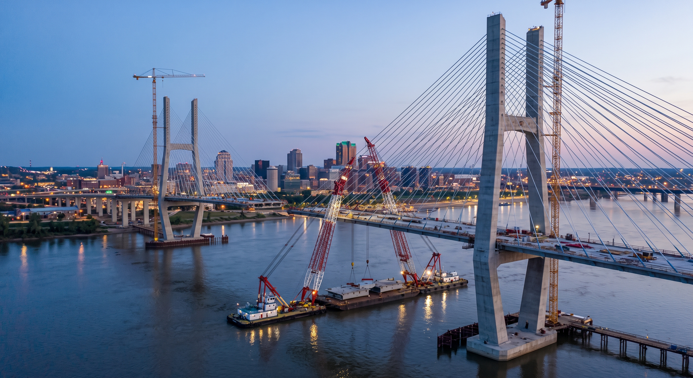
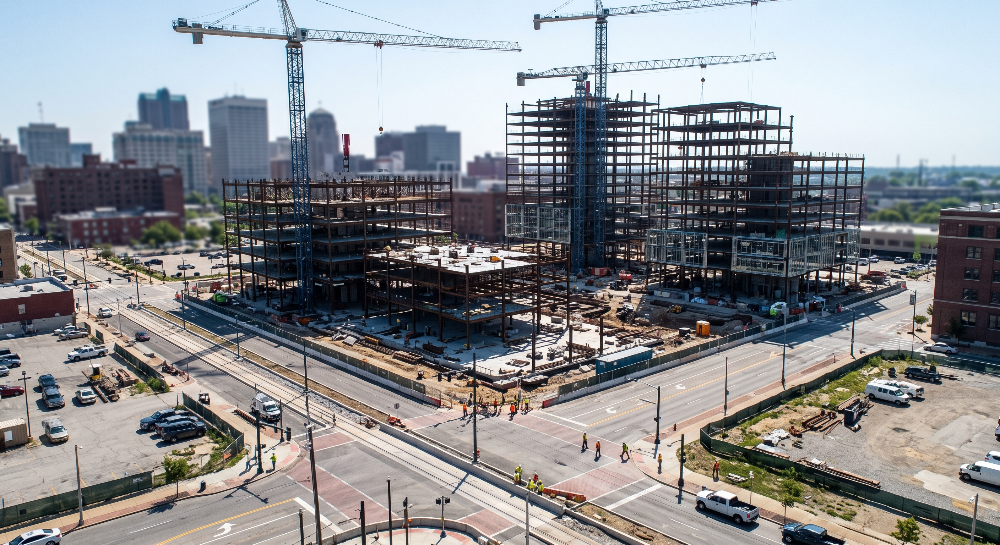
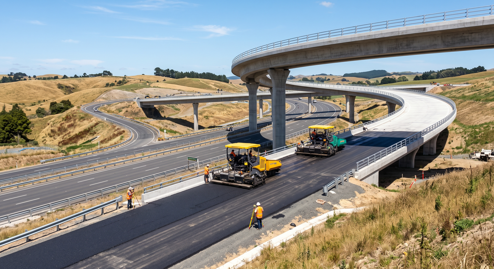
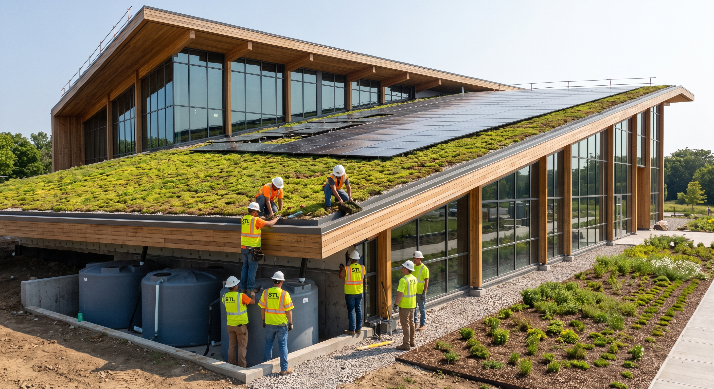

Service 08
Construction & Infrastructure
Reliable delivery support for built environments and infrastructure projects.




Construction & Infrastructure
Transforming blueprints into reality requires a trusted partner with profound engineering and execution expertise. STL manages construction and infrastructure projects across the entire lifecycle from investigation and design to implementation and restoration. By prioritizing quality-driven service and sustainable development, we simplify complex construction challenges to build enduring, high-value assets for our clients.
Built for reliable delivery.
We support construction and infrastructure work with structured coordination and a quality-led approach.
Key capabilities
Project support · Site coordination · Built-environment services · Infrastructure delivery
Discuss your needs